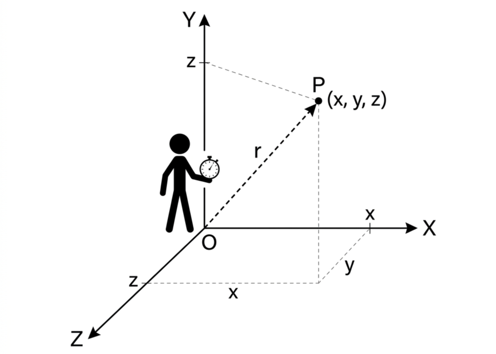
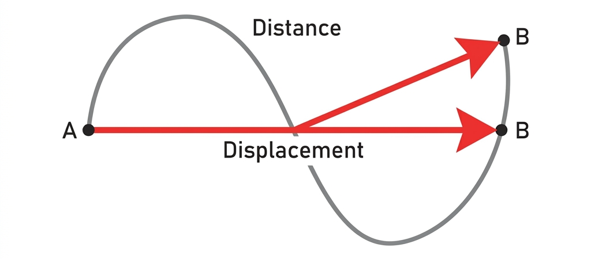
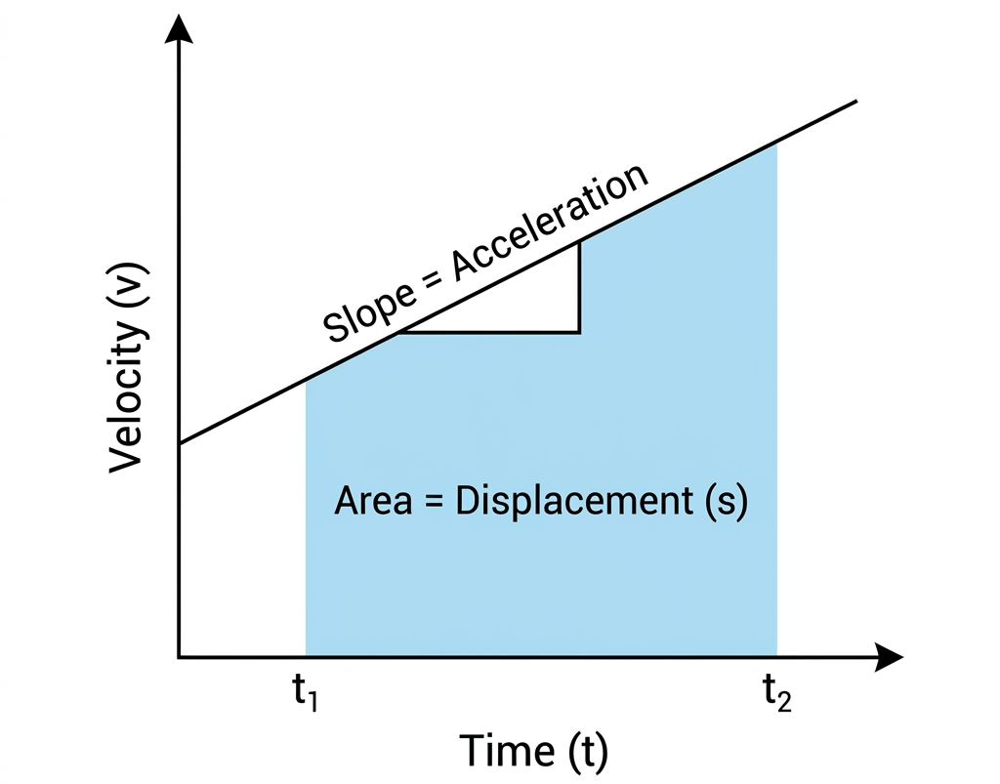

Vardaan Learning Institute
Class 11 Physics • Prerequisites Module 3
🌐 vardaanlearning.com
📞 9508841336
Kinematics
1. Basics of Motion
Before studying motion, we must define the system from which we observe it.
Definitions
Frame of Reference: A coordinate system (usually X, Y, Z axes) with a clock attached to it, relative to which an observer describes the position, velocity, and acceleration of an object.
Point Object: An object whose size is much smaller than the distance it covers. In kinematics, we often treat cars, trains, and even planets as point objects to simplify calculations.

Frame of Reference and Observer
Topic 1 Check
Question: Two different observers describe the motion of the same ball differently (one says it falls straight down, another says it follows a parabola). Who is right?
Solution: Both are perfectly right within their own Frame of Reference. A ball dropped in a moving train falls straight down horizontally relative to the passenger, but follows a parabola relative to a person standing outside fully accounting for the train's forward velocity.
2. Distance vs Displacement
In physics, distance and displacement describe the motion of an object from different perspectives.
Definitions
Distance: The total length of the actual path covered by an object. It is a scalar quantity.
Displacement: The change in position ($\Delta \vec{x} = \vec{x}_f - \vec{x}_i$). It is the shortest distance between initial and final points. It is a vector quantity.
Conceptual Rigor: Circular Path
If a particle moves in a circle of radius $R$:
- For half rotation: Distance = $\pi R$ | Displacement = $2R$
- For full rotation: Distance = $2\pi R$ | Displacement = $0$
- For $1/4$ rotation: Distance = $\pi R/2$ | Displacement = $\sqrt{2}R$

Distance vs Displacement Path Comparison
| Property |
Distance |
Displacement |
| Type of Quantity |
Scalar (Magnitude only) |
Vector (Magnitude + Direction) |
| Path Dependency |
Depends on the actual path taken |
Depends only on initial & final points |
| Value |
Always positive, never zero if moving |
Can be positive, negative, or zero |
| Relation |
$\text{Distance} \ge |\text{Displacement}|$ |
Topic 2 Check
Question: A particle completes exactly three-quarters of a circular track mapping out a radius of 10 m. Calculate the magnitude of its displacement.
Solution: The displacement relies exclusively on the initial and final points. If it completes $3/4$ of a circle, it forms a right triangle with the center where the two legs are the radii.
Displacement = $\sqrt{R^2 + R^2} = R\sqrt{2} = 10\sqrt{2} \approx \mathbf{14.14 \text{ m}}$.
3. Speed vs Velocity
Definitions
Speed: The rate of change of distance. It is a scalar.
Velocity: The rate of change of displacement. It is a vector.
Average Speed
$v_{avg} = \frac{\text{Total Distance}}{\text{Total Time}}$
Average Velocity
$\vec{v}_{avg} = \frac{\Delta \vec{x}}{\Delta t} = \frac{\text{Net Displacement}}{\text{Total
Time Taken}}$
Case Study: Average Speed Tricks
Case 1: Equal Time Intervals ($t_1 = t_2 = t$):
If a particle moves with speed $v_1$ for time $t$ and $v_2$ for time $t$, then:
$v_{avg} = \frac{v_1 + v_2}{2}$ (Simple arithmetic mean)
Case 2: Equal Distance Intervals ($s_1 = s_2 = s$):
If a particle moves distance $s$ with speed $v_1$ and another distance $s$ with speed $v_2$, then:
$v_{avg} = \frac{2v_1v_2}{v_1 + v_2}$ (Harmonic mean)
Instantaneous Velocity
It is the velocity at an exact point in time. It is the derivative of position $x$ with respect to time $t$.
$\vec{v} = \lim_{\Delta t \to 0} \frac{\Delta \vec{x}}{\Delta t} = \frac{d\vec{x}}{dt}$
Calculus Example
Question: If position of a particle is $x = 3t^2 + 2t + 5$ meters, find its velocity at $t = 2$ seconds.
Solution:
$v = \frac{dx}{dt} = \frac{d}{dt}(3t^2 + 2t + 5) = 6t + 2$
At $t = 2$: $v = 6(2) + 2 = \mathbf{14 \text{ m/s}}$.
Topic 3 Check
Question: A car aggressively limits its speed and travels 100 km at exactly 50 km/h, and then drives another 100 km at 100 km/h. Does the average speed equal 75 km/h?
Solution: No, applying a simple arithmetic average fundamentally fails over unequal time intervals. Since equal distances are covered across both zones, use the harmonic mean logic:
$v_{avg} = \frac{2v_1v_2}{v_1 + v_2} = \frac{2(50)(100)}{50 + 100} = \frac{10000}{150} = \mathbf{66.67 \text{ km/h}}$.
4. Acceleration
Acceleration describes the rate at which velocity changes.
Definition
Acceleration: The rate of change of velocity. It is a vector quantity.
$\vec{a} = \frac{\Delta \vec{v}}{\Delta t} =
\frac{\vec{v}_f - \vec{v}_i}{t}$
Instantaneous Acceleration
The acceleration at an instant is the derivative of velocity with respect to time.
$\vec{a} = \frac{d\vec{v}}{dt} = \frac{d^2\vec{x}}{dt^2}$
Topic 4 Check
Question: The instantaneous velocity of a particle is given entirely by the tracking equation $v(t) = 4t^2 - 6t + 3$ (in m/s). Mathematically derive its exact acceleration at $t = 2$ seconds.
Solution: Acceleration is mathematically the time-derivative of continuous velocity.
$a = \frac{dv}{dt} = \frac{d}{dt}(4t^2 - 6t + 3) = 8t - 6$
At $t = 2$ s: $a = 8(2) - 6 = 16 - 6 = \mathbf{10 \text{ m/s}^2}$.
5. Kinematic Equations (Equations of Motion)
These equations are valid only when acceleration ($a$) is constant (uniform).
Equations for Constant Acceleration
1. $v = u + at$
2. $s = ut + \frac{1}{2}at^2$
3. $v^2 - u^2 = 2as$
4. $s_n = u + \frac{a}{2}(2n - 1) \quad (\text{Displacement in } n^{th} \text{ second})$
Variables Defined
- $u$: Initial Velocity (at $t=0$)
- $v$: Final Velocity (at time $t$)
- $s$: Displacement (not distance!)
- $a$: Constant Acceleration
- $t$: Time taken
Important Note
⚠️ "Negative acceleration" doesn't always mean slowing down. It depends on the direction of velocity! If
velocity is already negative and acceleration is negative, the object is speeding up in the negative direction.
Topic 5 Check
Question: A car hitting maximum thrust from a total standstill uniformly accelerates at 2 m/s² for a sustained 10 seconds. How far did the car physically travel?
Solution: Given: $u = 0$, $a = 2 \text{ m/s}^2$, $t = 10 \text{ s}$.
Using the 2nd Equation of Motion: $s = ut + \frac{1}{2}at^2$
$s = 0(10) + \frac{1}{2}(2)(10)^2 = \mathbf{100 \text{ m}}$.
6. Motion Under Gravity
When an object is moving vertically near Earth's surface, it experiences a constant acceleration due to gravity ($g \approx 9.8 \text{ m/s}^2$ or $10 \text{ m/s}^2$).
Sign Convention
Usually, we take Upward as Positive (+) and Downward as Negative (-). Thus, $a = -g$.
Key Results for Vertical Throw
(Initial velocity $u$ upwards)
1. Maximum Height: $H_{max} = \frac{u^2}{2g}$
2. Time to reach $H_{max}$: $t_{up} = \frac{u}{g}$
3. Total Time of Flight: $T = \frac{2u}{g}$
4. Impact Velocity: $v = -u$ (Same speed, opposite direction)

Motion Under Gravity: Upward and Downward Trajectory
Topic 6 Check
Question: An object thrown perfectly upward returns exactly to the thrower's hand horizontally after fully eclipsing 4 seconds of air-time. State its launch velocity. (Take $g = 10 \text{ m/s}^2$)
Solution: Total elapsed time in the air is calculated mathematically identically as $T = \frac{2u}{g}$.
Substituting the known constraints: $4 = \frac{2u}{10} \implies 40 = 2u \implies \mathbf{u = 20 \text{ m/s}}$.
7. Relative Velocity (1D)
Relative velocity is the velocity of one object as observed from another moving object.
Relative Velocity Formula
$\vec{v}_{AB} = \vec{v}_A - \vec{v}_B$
$\vec{v}_{AB}$ is the "Velocity of A with respect to B".
Practical Rule
To find $v_{AB}$, imagine object B is at rest. To do this, subtract the velocity of B from both objects. The resulting velocity of A is its relative velocity.
Topic 7 Check
Question: Two localized trains exist on adjacent parallel rail systems. Train A is heading straight north at 40 m/s. Train B is heading completely south at 30 m/s. Calculate extreme relative velocity.
Solution: Enlisting polarities natively for diametrically opposed vectors: Let $v_A = +40 \text{ m/s}$, $v_B = -30 \text{ m/s}$.
$v_{AB} = v_A - v_B = 40 - (-30) = \mathbf{70 \text{ m/s}}$. They structurally approach each other at blinding relative speeds of 70 m/s.
8. Velocity–Time ($v–t$) Graph Analysis
A velocity-time graph is one of the most powerful tools in kinematics.
Key Properties
- Slope of $v–t$ graph: Represents Acceleration ($a = \frac{dv}{dt}$).
- Area under $v–t$ graph: Represents Displacement ($s = \int v \, dt$).
- Area between $v-t$ curve and time axis (ignoring signs): Represents Distance.

Velocity–Time (v–t) Graph: Slope (Acceleration) and Area (Displacement)
Acceleration–Time ($a-t$) Graph
Area under $a-t$ graph: Represents Change in Velocity ($\Delta v = v_f - v_i$).
Topic 8 Check
Question: A $v-t$ graphical map models a particle tracing physically out a perfect triangle spanning fundamentally a base length of 10s and a vertical height scaling 20 m/s (from origin). Calculate final displacement.
Solution: Geometric displacement acts mathematically as the absolute physical area constrained below the mapped $v-t$ curve.
For a rigid triangle structure: Area = $\frac{1}{2}bh = \frac{1}{2}(10\text{ s})(20\text{ m/s}) = \mathbf{100 \text{ m}}$.
5. Uniform Circular Motion
When an object moves in a circle at a constant speed, its direction changes continuously, meaning it is always
accelerating.
Centripetal Acceleration
Even if the speed is constant, the direction changes, creating an acceleration directed toward the center of
the circle.
$a_c = \frac{v^2}{r} = \omega^2 r$
Where:
- $v$: Tangential speed
- $r$: Radius of the circle
- $\omega$: Angular velocity

Uniform Circular Motion: Velocity and Centripetal Acceleration Vectors
Radial vs Tangential Acceleration
Concepts
- Radial (Centripetal) Acceleration ($a_c$): Responsible for changing the
direction of velocity. Always present in circular motion.
- Tangential Acceleration ($a_t$): Responsible for changing the magnitude
(speed). Present only in non-uniform circular motion.
Net Acceleration: $a_{net} = \sqrt{a_c^2 + a_t^2}$
Quick Summary
Slope of Position vs Time Graph = Velocity
Slope of Velocity vs Time Graph = Acceleration
Area of Velocity vs Time Graph = Displacement
Centripetal Acceleration = Always points to the center!
Topic 9 Check
Question: A high-friction vehicle carves sharply around a circular junction completely fixed at a radius of 50 m maintaining fiercely a static velocity scalar of 20 m/s. Does it physically experience acceleration?
Solution: YES. Even though the magnitude of speed operates totally uniformly, the rigid vectorial direction rotates continuously. Thus, it physically experiences constant Centripetal Acceleration.
$a_c = \frac{v^2}{r} = \frac{(20)^2}{50} = \frac{400}{50} = \mathbf{8 \text{ m/s}^2}$ acting perfectly inward.
MEGA PRACTICE BANK (Calculus Kinematics & Advanced Motion)
Problem 10: Variable Acceleration Logic (Class 12 Prep)
Question: A particle's shifting acceleration acts under the function $a(t) = 3t^2 + 2$. If it functionally begins strictly from geometric rest at position origin $x=0$, integrate its exact instantaneous position algorithm at time $t$.
Solution: Since acceleration varies physically, we mathematically integrate rather strictly up the hierarchy.
1. Calculate Velocity: $v = \int a \, dt = \int (3t^2 + 2) dt = t^3 + 2t + C_1$. (Since it originates at rest, $v(0)=0 \implies C_1=0$. So $v = t^3 + 2t$).
2. Calculate Position: $x = \int v \, dt = \int (t^3 + 2t) dt = \mathbf{\frac{t^4}{4} + t^2}$.
Problem 11: Brake System Design Matrix
Question: An autonomous driving matrix system cruises continuously at 30 m/s. It suddenly triggers algorithmic brakes imposing fiercely a deceleration of 5 m/s² but suffers an intrinsic computational processor 0.5s reaction gap delay first. Calculate mathematically the terminating distance prior to total rigid stop.
Solution: The algorithmic physics sequence splits rigidly into two domains.
1. Total Reaction Time Gap Distance ($a=0$): $s_1 = v_{initial} \times t_{reaction} = 30(0.5) = 15 \text{ m}$.
2. Hard Braking Stop Distance ($v_f=0$): Using $v^2 = u^2 + 2as \implies 0 = 30^2 + 2(-5)s_2 \implies 10s_2 = 900 \implies s_2 = 90 \text{ m}$.
Total Geometric Stopping Architecture Matrix = $15 + 90 = \mathbf{105 \text{ m}}$.